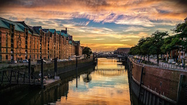
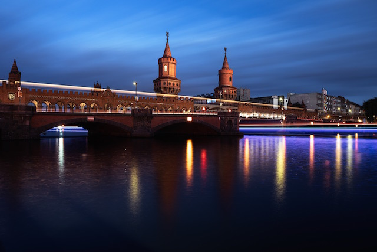
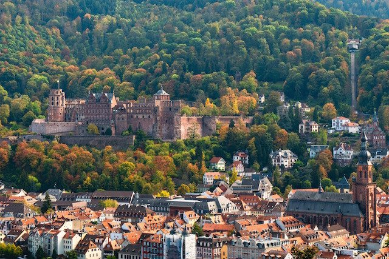
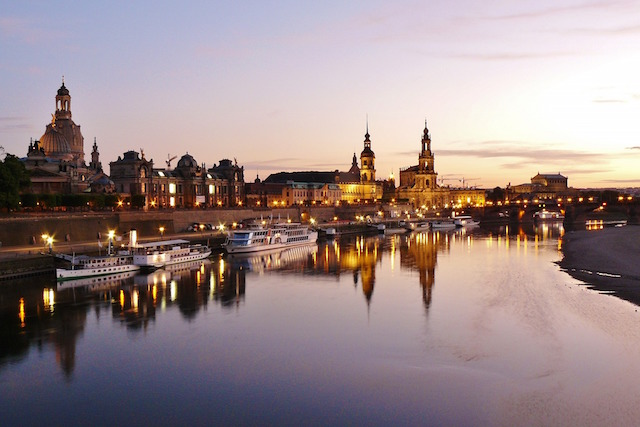
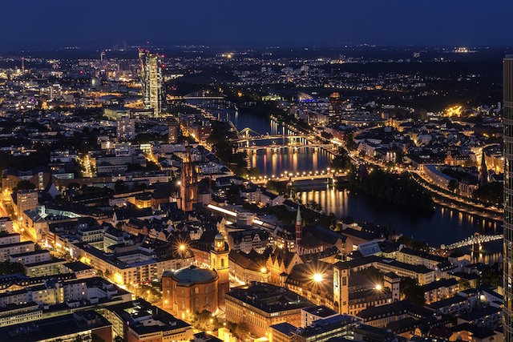

Hallo!
About Germany
Germany will be my second destination. I have always dreamed of visiting this country for various reasons. Since a very young age, the German language has always caught my attention. I have taken a couple German classes and now when I finally go I will be able to put my skills to the test. I also plan on practicing more German and hopefully learning new things I didn't know before. There are over 2,000 castles in Germany and I would love to go abroad and see as many castles as I possibly can. The first castle I plan on exploring is the Heidelberg Castle. This castle dominates the view of the old center of Heidelberg and has had a long and rough history since the earliest castle structure was built. Heidelberg was completely destroyed during the Thirty Years War and later by the French in the 17th century. I truly find the histories of castles to be extremely interesting and I can't wait to see not only this castle but many other castles in Germany.
Best Places to Visit in Germany
1. Berlin
Read More: Top Berlin Attractions You Can't Miss 2. Heidelberg
Read More: Top 10 Tourist Heidelberg Attractions 3. Dresden
Read More: Top 10 Tourist Dresden Attractions you Can't Miss 4. Frankfurt
Read More: 8 Best Great Day Trips from Frankfurt Typical German Food
- Knödel: Bread dumplings, eaten with mushrooms in a creamy sauce or with meat dishes.
- Kartoffelknödel: Potato dumplings
- Sauerkraut: The most famous vegetable associated with German food. It is eaten in Germany with potatoes and meat.
- Weisswurst: Pale veal sausage, cooked and eaten in Bavaria - usually in midmorning, before noon.
- Stollen and Lebkuchen: Delicious cakes, decorated biscuits and various gingerbread cookies eaten at Christmas time.